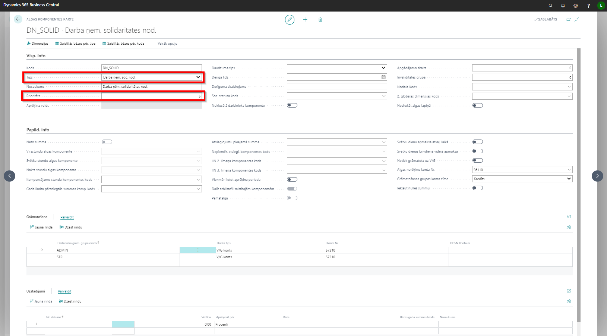
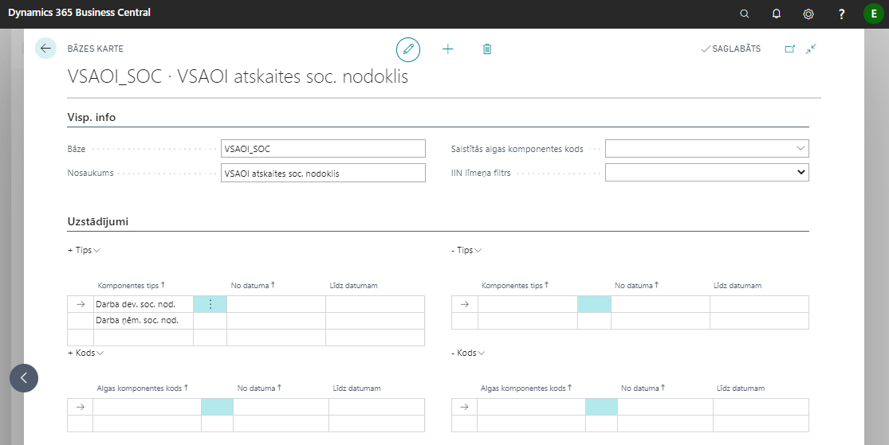
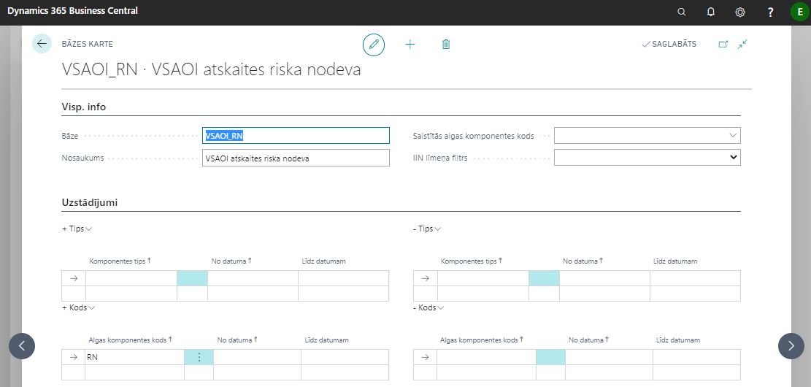
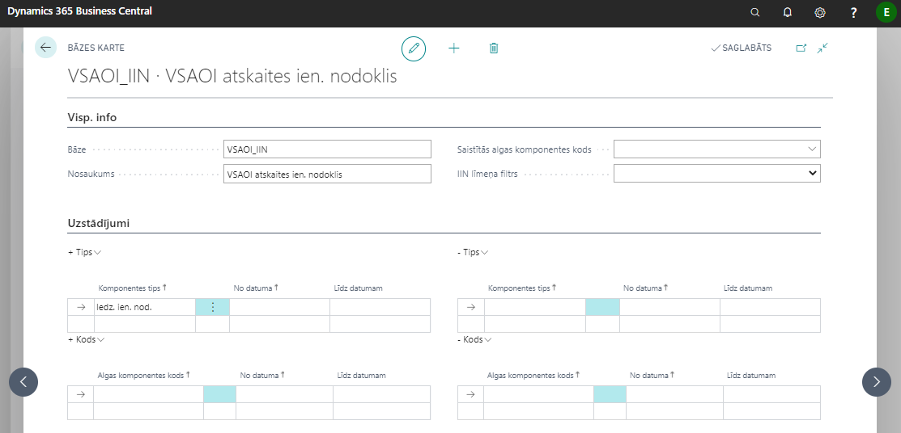
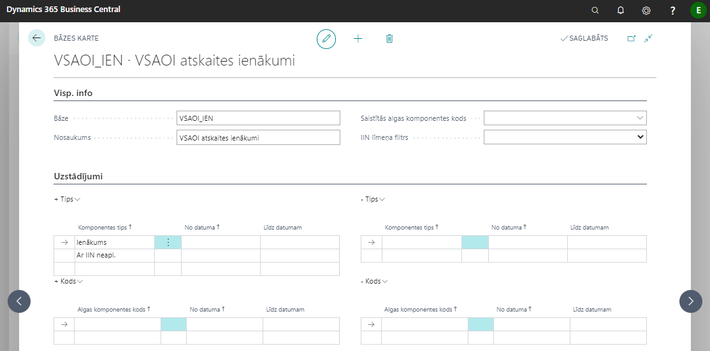

Solidaritātes nodokļa uzstādījumi
Lai sistēmā tiktu veikts korekts solidaritātes nodokļa aprēķins, ir jāsaliek sekojošie uzstādījumi: darba ņēmēja solidaritātes nodoklis un darba devēja solidaritātes nodoklis. Jāizveido jaunas algas komponentes: DN_SOLID un DD_SOLID. Veidojot jaunas komponentes jāpievērš uzmanība, ka tipam jābūt atbilstoši vai Darba ņem. soc. nod. vai Darba dev. soc. nod. Algas komponenšu prioritātēm jābūt vienādām ar atbilstošā nodokļa prioritāti. Ja darba ņēmēja sociālā nodokļa prioritāte ir 5, tad darba ņēmēja solidaritātes nodoklim arī jābūt 5.

VID atskaitēm nepieciešams norādīt 4 jaunas bāzes. Atvērt lapu Bāzes, nospiest Jauns un aizpildīt parametrus. Visām bāzēm pielikti attēli ar nepieciešamiem uzstādījumiem.




Lai norādītu bāzes, jāatver Algu uzstādījumi lapa, cilni Atskaites un jānorāda atbilstošas bāzes:

VSAOI atskaitē nerezidentiem netiks aizpildīts IIN, gadījumā ja darbinieka kartē laukā Rezidence ir izvēlēta opcija Nerezidents. Atbilstoši aprēķina rindās tiek aizpildīta vērtība Nerezidents.